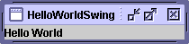

This is the first of several sections that teach Swing basics by looking at example code. This section examines the code for a simple program,HelloWorldSwing. The examples in the following sections will become progressively more difficult as we introduce and explain more features.Here's a snapshot of the
HelloWorldSwingprogram: And here's the full code forHelloWorldSwing:This is one of the simplest Swing applications you can write. It doesn’t do much, but the code demonstrates the basic code in every Swing program:import javax.swing.*; public class HelloWorldSwing { /** * Create the GUI and show it. For thread safety, * this method should be invoked from the * event-dispatching thread. */ private static void createAndShowGUI() { //Make sure we have nice window decorations. JFrame.setDefaultLookAndFeelDecorated(true); //Create and set up the window. JFrame frame = new JFrame("HelloWorldSwing"); frame.setDefaultCloseOperation(JFrame.EXIT_ON_CLOSE); //Add the ubiquitous "Hello World" label. JLabel label = new JLabel("Hello World"); frame.getContentPane().add(label); //Display the window. frame.pack(); frame.setVisible(true); } public static void main(String[] args) { //Schedule a job for the event-dispatching thread: //creating and showing this application's GUI. javax.swing.SwingUtilities.invokeLater(new Runnable() { public void run() { createAndShowGUI(); } }); } }The first line imports the main Swing package:
- Import the pertinent packages.
- Set up a top-level container.
- Display the container.
- Be thread-safe.
This is the only package thatimport javax.swing.*;HelloWorldSwingneeds. However, most Swing programs also need to import two AWT packages:These packages are required because Swing components use the AWT infrastructure, including the AWT event model. The event model governs how a component reacts to events such as button clicks and mouse motion. You'll learn more about events in the upcoming section Handling Events.import java.awt.*; import java.awt.event.*;Every program with a Swing GUI must have at least one top-level Swing container. A top-level Swing container provides the support Swing components need for painting and event handling. There are three commonly used top-level Swing containers:
JFrame,JDialog, and (for applets)JApplet. EachJFrameobject implements a single main window, and eachJDialogimplements a secondary window (a window dependent on another window). EachJAppletobject implements an applet’s display area within a browser window. (JAppletis covered in How to Make Applets.)The
HelloWorldSwingexample has only one top-level container, aJFrame. Implemented as an instance of theJFrameclass, a frame is a window that, by default, has decorations such as a border, a title, and buttons for iconifying and closing the window. Applications with a GUI typically use at least one frame.Here is the code that sets up and shows the frame:
JFrame.setDefaultLookAndFeelDecorated(true); JFrame frame = new JFrame("HelloWorldSwing"); ... frame.pack(); frame.setVisible(true);With the exception of top-level containers, such as
Note: The following line of code applies decorative borders and window titles to frames. However, it works only as of v1.4. If you’re using an earlier version, you’ll need to comment out this code.JFrame.setDefaultLookAndFeelDecorated(true);JFrame, all Swing components descend from theJComponentclass.HelloWorldSwinguses aJComponentdescendant calledJLabel, which displays the textHello World. These two lines of code construct and then add theJLabelcomponent to the frame:Note that the label is added to the frame’s content pane instead of to the frame itself. Every top-level container has a content pane that contains, directly or indirectly, all the visible components (except for menus and window decorations) in the top-level container.JLabel label = new JLabel("Hello World"); frame.getContentPane().add(label);To make the program exit when the Close button
Version Note: We anticipate that in v1.5 invoking add on a top-level container will have the same effect as invoking it on the top-level container’s content pane.is clicked, we include this code:
frame.setDefaultCloseOperation(JFrame.EXIT_ON_CLOSE);The final bit of code in
Version Note: In older programs, instead of a call tosetDefaultCloseOperation, you might see code like the following:It still works, but unnecessarily adds a class, which bloats your program. You can find further information on window events in How to Make Frames (Main Windows)frame.addWindowListener(new WindowAdapter() { public void windowClosing(WindowEvent e) { System.exit(0); } });HelloWorldSwing—-and in all of our examples—-looks like this:You can copy this code and use it as-is. It might look daunting, but we recommend it because it ensures that the GUI won't have a thread-safety problem that could break the UI before it even appears onscreen. For more information, you can read Concurrency in Swing.javax.swing.SwingUtilities.invokeLater(new Runnable() { public void run() { /* create and show the GUI */ } });